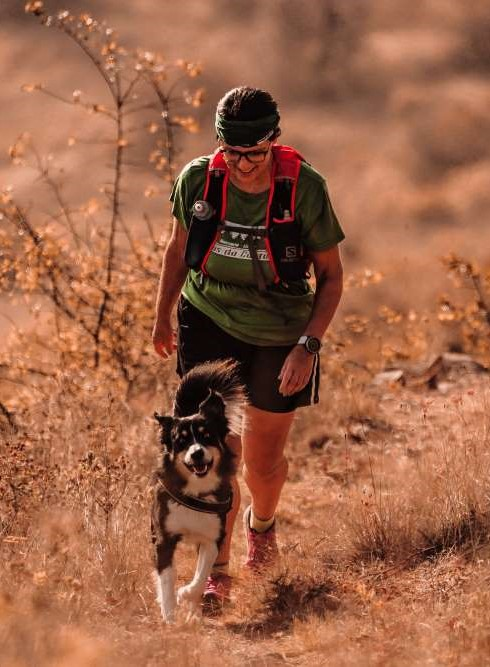
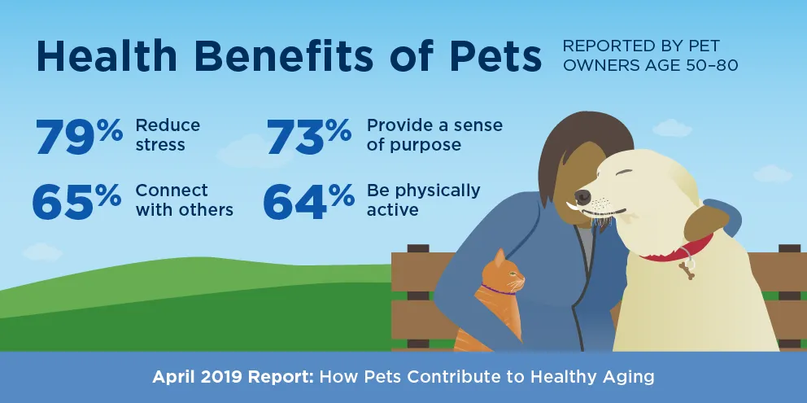
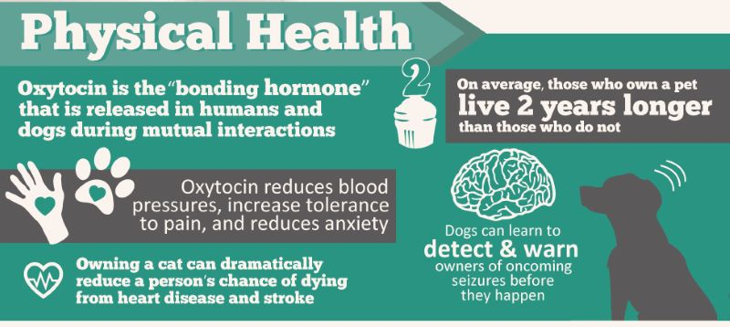
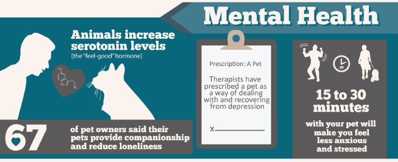

How can we relate to dogs?
How can we enhance our connection with dogs?




"Dogs have a way of finding the people who need them, filling an emptiness we don't even know we have."
"Dogs do speak, but only to those who know how to listen."
A pet can help humans in numerous ways…
but how can humans help pets?
but how can humans help pets?
Future Possibilities
Interaction
A device that detects emotions and moods in animals using sensors, then communicates the mood to a device for the human
Relationship
Communication between humans and animals using technology
Photos:
www.pexels.com
www.unsplash.com
www.tractive.com
Quotes:
www.goodreads.com/quotes/tag/dogs
Health Benefits of Pets:
https://www.aau.edu/research-scholarship/featured-research-topics/furry-friends-help-older-adults-cope-health-issues
Physical/Mental Health Statistics:
https://blog.nationalgeographic.org/wp-content/uploads/2012/07/carltonhobbs.png
Research:
https://sci-hub.se/10.1145/3152130.3152153
https://newsinhealth.nih.gov/2018/02/power-pets